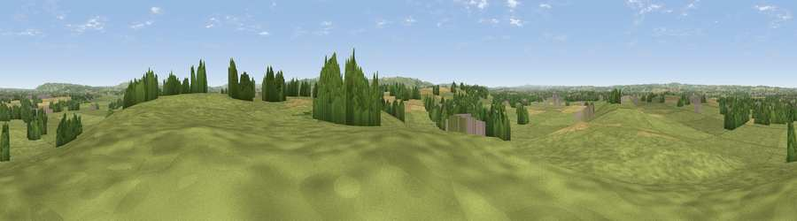

Viewpoint near Great Hinton
#25905 in England · top 45% of its area beats it · near Great HintonThe view, rendered

A 360° render of this exact spot computed from the terrain model, tree cover and land cover — summer colours, afternoon light, calibrated against photographs of famous viewpoints. Real trees, hedges and buildings will differ in detail.
The panorama
Grey silhouette: terrain skyline in each direction (720 bearings, Earth curvature and refraction included). Dashed green: skyline with trees (+15 m) and buildings (+8 m) as obstacles. Blue strip: how far the ground is visible on each bearing.
Where the view opens
Wedge length = distance to the farthest visible ground on that bearing (vegetation-aware). Rings at 10, 25 and 50 km.
What fills the view
75% grassland · 12% cropland · 10% woodland · 3% built-up
Angular shares of the visible panorama (visual magnitude), not map area. Landscape diversity 0.35 (0–1 Shannon).
Key numbers
More beautiful places nearby
The staircase of upgrades: each row has a higher view potential than everything closer. Driving times are estimates from straight-line distance, calibrated against real road routing — check an actual route before setting out.
| Place | Direction | Drive | Score |
|---|---|---|---|
| Viewpoint near Melksham | NNE · 7 km | ~14 min | 48.4 |
| Viewpoint near Edington | SSE · 7 km | ~14 min | 71.9 |
| Viewpoint near Bratton | S · 7 km | ~15 min | 73.2 |
| King's Play Hill | ENE · 13 km | ~24 min | 73.9 |
| Morgan's Hill | ENE · 15 km | ~27 min | 74.3 |
| Cley Hill | SSW · 15 km | ~27 min | 76.8 |
| Martinsell viewpoint | E · 28 km | ~45 min | 77.3 |
| Viewpoint near Lamyatt | SW · 33 km | ~50 min | 77.8 |
51.32933, -2.14384 · source: screening · position refined by local search. Computed location — check access rights before visiting.